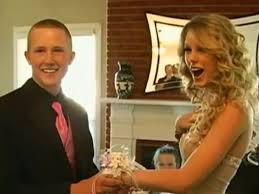
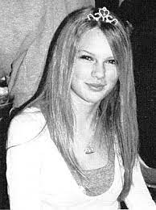
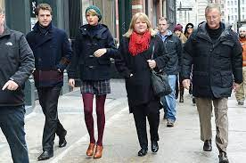
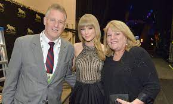
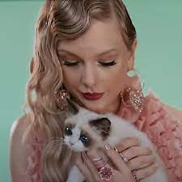
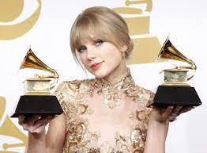
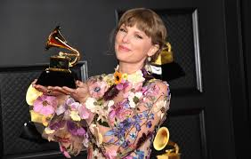
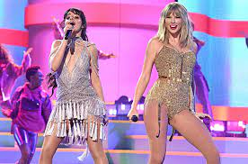
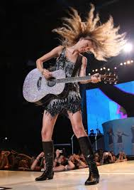
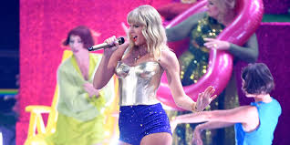

|
||
 |
 |
 |
 |
|  |  |
|  |  |
|  |
|  |  |
|  |  |  |
| Album Name | Cover Art | Year |
|---|---|---|
| Taylor Swift |
 |
2006 |
| Fearless |
 |
2008 |
| Speak Now |
 |
2010 |
| Red |
 |
2012 |
| 1989 |
 |
2014 |
| Reputation |
 |
2017 |
| Lover |
 |
2019 |
| Folklore |
 |
2020 |
| Evermore |
 |
2020 |